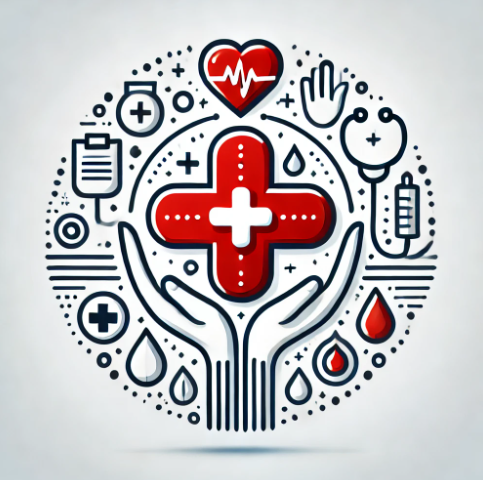

Poor healthcare has been a problem in the Philippines, especially in rural areas, because the quality of healthcare in rural areas is significantly lower than at hospitals in big cities. Moreover, there is also a difference in the consistency of private healthcare and facilities that are better equipped than public ones. Public healthcare and healthcare in rural places are strained by the huge number of Filipinos who rely on them. Because of poverty, high medical expenses, and limited access to care, health disparities persist.
To address the problem of poor healthcare, our organization, Health is Wealth, aims to provide medical services that are easily approachable and reasonably priced, including internet consultations, health education, and resources for preventive care to underserved areas. This organization aims to provide equal medical quality in rural areas and public healthcare that private healthcare in larger cities already has. To solve 1 SDG which is Good Health & Well-being, Health is Wealth is prepared to make the medical world of the Philippines a better place.